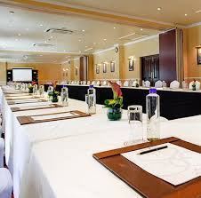
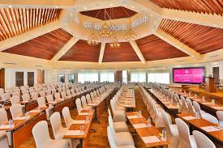
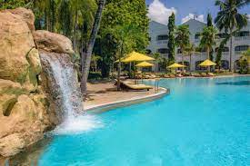
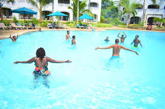
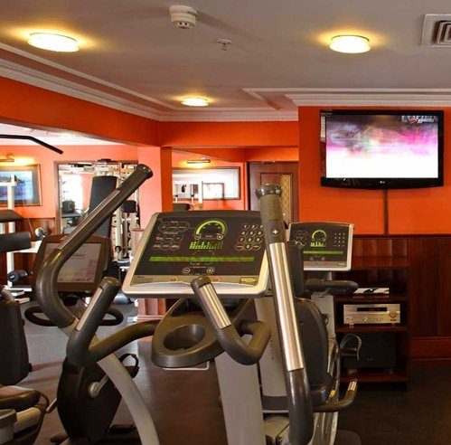
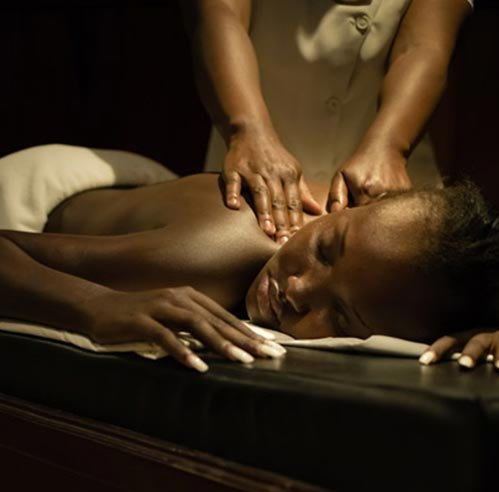

We are the leading Conference Centre in the East, South and West African countries. Our conference rooms offer a perfect setting for business conferences, seminars and workshops in a relaxed atmosphere. They are fully equipped to meet clients’ requirements and are served with our unlimited, free wireless internet connection.
 "kitchens of Sarova" is Kenya's leading outdoor catering & banqueting production house. From large scale catering for over five thousand guests at a presidential event to a Chefs Table for six and from memorable weddings to thrilling bush dining, we continue to conceptualise and deliver unique culinary experiences that are today a hallmark of Sarova Hotels. Flavor, Freshness, Sustainability, Service and Innovation Tailor made menus Site visits by highly experienced teams Complete waiter and bar service with managerial supervision Customized catering services Customized Concepts created in conjunction with our specialist partners. No radius limit Complete Transportation Arrangements
Situated on the fifth floor, adjoining the swimming pool, The Stanley Health Club includes a gymnasium, aerobics studio, spacious sauna, steam and relaxation rooms.
 For the fitness minded, the gymnasium offers a range of state-of-the-art exercise equipment including cross trainers, exercise cycles, free weights, multi gym, rowing machines and treadmills, free of charge to guests. There are also highly qualified instructors on duty at all times to assist you in your workout.
Enjoy a range of relaxing or energising treatments in our Health Club massage facilities
